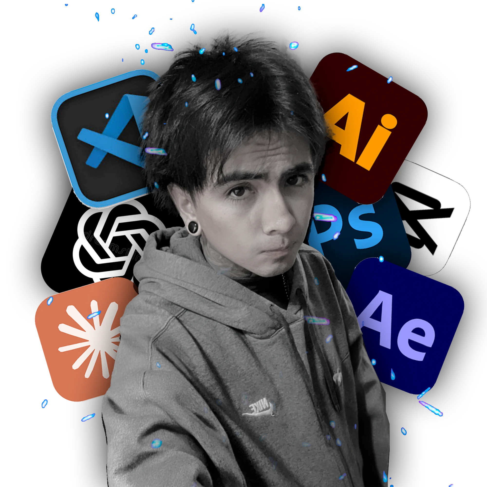
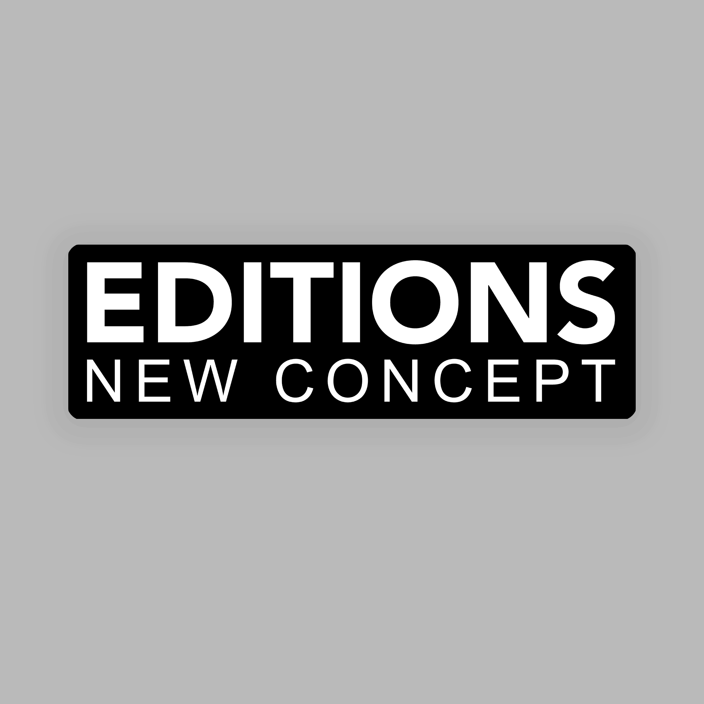
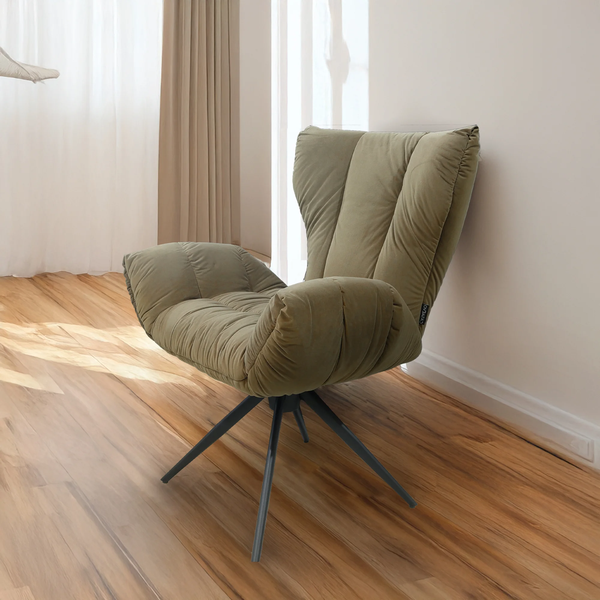
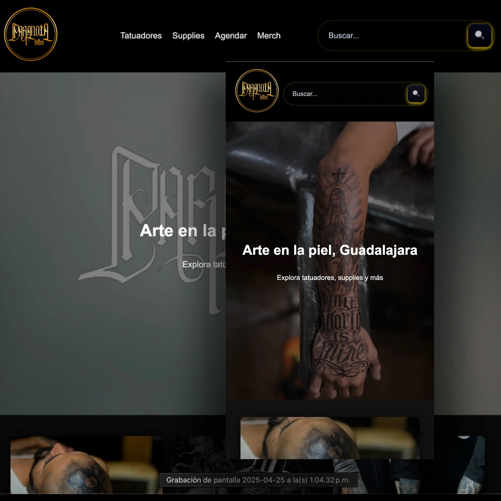
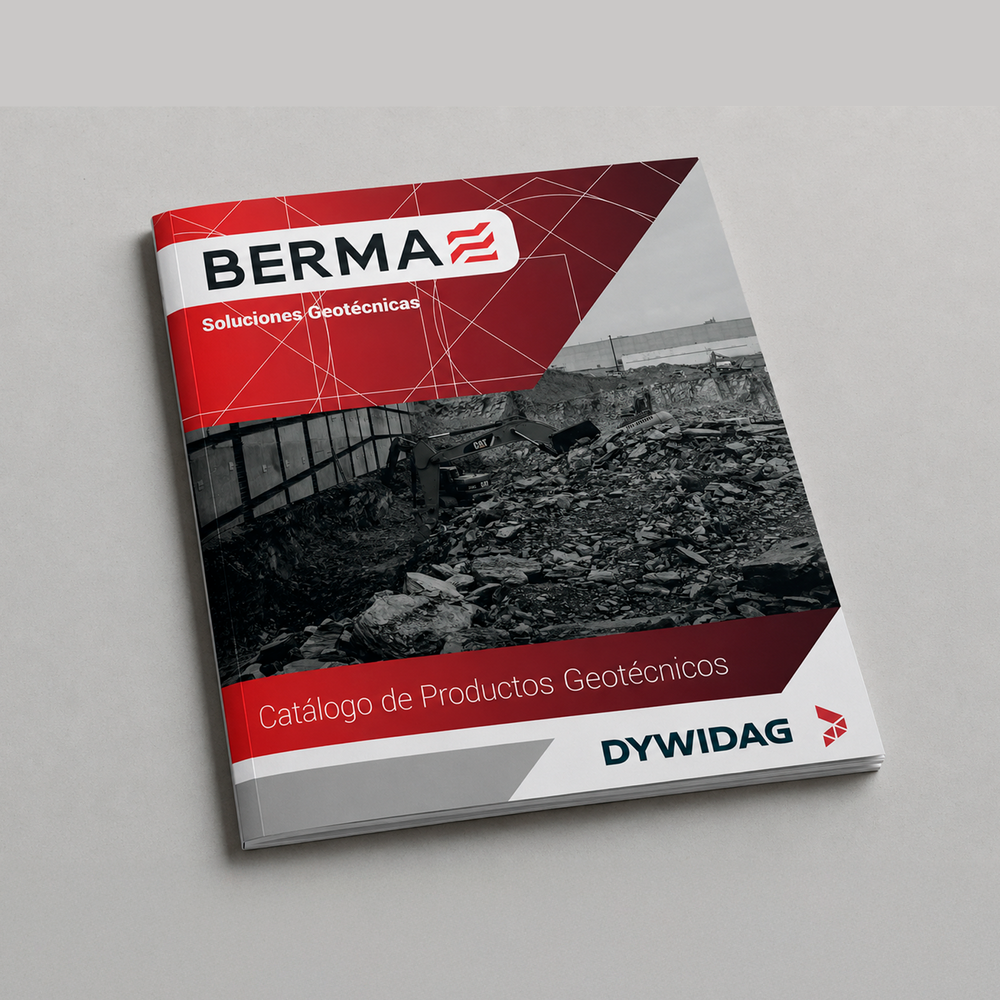
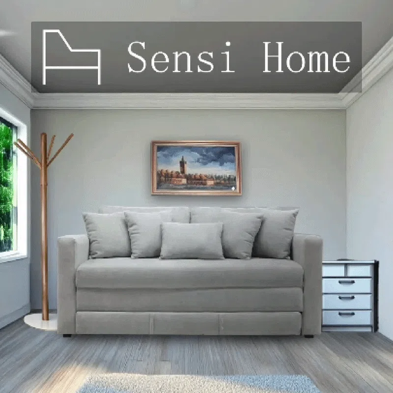

Diseño y construyo
experiencias que
se mueven
Hola, soy Casiel Nicolás Rodríguez Vázquez. Diseñador gráfico y desarrollador web especializado en frontend. Creo soluciones gráficas, audiovisuales y digitales para proyectos, startups y empresas — desde la identidad de marca hasta el código que la hace funcionar.
- +5 Años de experiencia
- +80 Proyectos entregados
- +30 Marcas acompañadas
Galería

Logofolio
Selección de logotipos, imagotipos e identidad visual diseñados para negocios y emprendimientos.

Fotografía
Fotografía artística, de producto y de eventos, con enfoque en composición y estilo visual.

Diseño web
Creación de landing pages y sitios web responsivos con enfoque en experiencia de usuario.

Producción gráfica
Diseño de materiales impresos y digitales para identidad visual y campañas de marketing.

Audiovisual
Edición de video, audio y animaciones motion graphics para proyectos creativos.